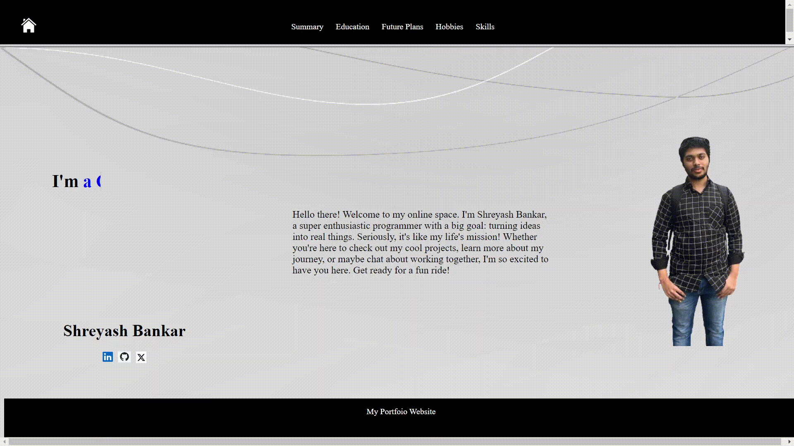

About Me
Hello there! Welcome to my online space. I'm Shreyash Bankar, a super enthusiastic programmer with a big goal: turning ideas into real things. Seriously, it's like my life's mission! Whether you're here to check out my cool projects, learn more about my journey, or maybe chat about working together, I'm so excited to have you here. Get ready for a fun ride!


My Skills
HTML serves as the backbone of every web page, and my mastery of this foundational language ensures the creation of accessible, well-structured, and semantically meaningful content. With a keen eye for detail and adherence to best practices, I leverage HTML to craft clean and efficient markup that forms the structural foundation of modern web applications. From defining document structure to organizing content hierarchies and incorporating multimedia elements, I employ HTML to create engaging and user-friendly interfaces that cater to diverse audiences across different devices and platforms.
As a skilled CSS developer, I specialize in transforming static HTML elements into visually stunning and aesthetically pleasing designs. Through the strategic use of stylesheets, I apply layout, typography, color, and animation techniques to enhance the presentation and user experience of web pages. Whether it's implementing responsive design principles to ensure compatibility across various screen sizes, optimizing performance through CSS preprocessing, or adhering to the latest design trends and standards, my expertise in CSS enables me to create engaging and visually cohesive interfaces that elevate the overall quality of web applications.
With a deep understanding of JavaScript and its ecosystem, I am adept at building dynamic and interactive web applications. From front-end development using modern frameworks like React and Vue.js to server-side programming with Node.js, I leverage the power of JavaScript across the full stack. My expertise extends to crafting responsive user interfaces, implementing client-side logic, and optimizing performance for seamless user experiences. Whether it's manipulating the DOM, consuming APIs, or implementing asynchronous functionality, I harness the flexibility and versatility of JavaScript to create innovative solutions that push the boundaries of web development.
As a seasoned Java developer, I bring a wealth of experience and proficiency to any project. With a strong foundation in object-oriented programming principles, I excel at designing and implementing robust, scalable backend solutions. Whether it's crafting efficient algorithms, integrating with databases, or developing enterprise-level applications, my expertise in Java enables me to tackle complex challenges with precision and efficiency. From desktop applications to web services, I leverage the versatility of Java to deliver high-quality software solutions that meet the diverse needs of clients and users alike.
My knowledge concerning Data Structures and Algorithms, it forms a cornerstone in my approach to problem-solving. This expertise is something which indeed happens to be instrumental in creating optimized and efficient solutions. Whether it's optimizing code for better performance or devising scalable systems, my understanding of DSA empowers me to approach development challenges with quite a strategic mindset. This will ensure the reliability and efficiency of the software systems I design.
Portfolio
Portfolio website(using HTML and CSS only)
My portfolio website, crafted meticulously with HTML and CSS, showcases my creativity and skills in web development. Utilizing the power of CSS animations through keyframe and transition tags, I've brought elements to life, adding flair and interactivity to the user experience. From smooth transitions between pages to subtle hover effects on project thumbnails, every detail is carefully designed to engage visitors and highlight my work effectively. With a clean and modern aesthetic, my website not only serves as a platform to display my projects but also demonstrates my proficiency in front-end web development techniques.
My Resume
.png)
As a skilled Web Developer proficient in CSS, HTML, and JavaScript, with a background in Java and C++, I bring a robust set of programming skills to any project. Alongside my expertise in web technologies, I possess a solid understanding of Data Structures and Algorithms, enhancing my ability to develop efficient and scalable solutions. With a passion for coding and a keen interest in exploring new technologies, I continuously strive to deliver high-quality, innovative solutions. Beyond the realm of programming, I find joy in playing cricket, indulging in music, and continually honing my skills. Holding a B-Tech degree with a notable academic record including an impressive CGPA of 8.84, 93.17% in 12th grade, and 91.2% in 10th grade, I am committed to excelling in both professional endeavors and personal pursuits.
Contact Me
For collaboration or inquiries, please feel free to reach out to me at:
shreyashbankar10@gmail.com
7892839273